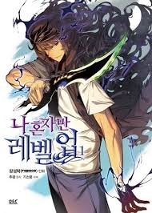

Welcome to Anime Addict's Webtoons page where you can find different recommendations you should read
Solo Leveling:
Ten years ago, after "the Gate" that connected the real world with the monster world opened, some of the ordinary, everyday people received the power to hunt monsters within the Gate. They are known as "Hunters." However, not all Hunters are powerful. My name is Sung Jin-Woo, an E-rank Hunter.
I'm someone who has to risk his life in the lowliest of dungeons, the "World's Weakest." Having no skills whatsoever to display, I barely earned the required money by fighting in low-leveled dungeons... at least until I found a hidden dungeon with the hardest difficulty within the D-rank dungeons! In the end, as I was accepting death, I suddenly received a strange power,
a quest log that only I could see, a secret to leveling up that only I know about! If I trained in accordance with my quests and hunted monsters, my level would rise. Changing from the weakest Hunter to the strongest S-rank Hunter! (source: myanimelist)
The God of High School:
It all began as a fighting tournament to seek out for the best fighter among all high school students in Korea. Mori Jin, a Taekwondo specialist and a high school student, soon learns that there is something much greater beneath the stage of the tournament. (source: myanimelist)

Tower of God centers around a boy called Twenty-Fifth Bam, who has spent most of his life trapped beneath a vast and mysterious Tower, with only his close friend, Rachel, to keep him company. When Rachel enters the Tower, Bam manages to open the door into it as well, and faces challenges at each floor of this tower as he tries to find his closest companion.(source: myanimelist)
© This is a demonstration website for LSBU (London Southbank University) all images and text is from, wikipedia, myanimelist, Crunchyroll, tenor, mangarock